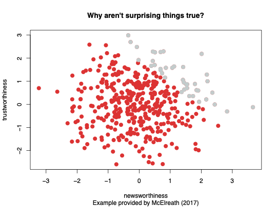

4 Specification and Assessment Issues
This concluding chapter deals with an epistemological question, namely how to convey your key results, and an ontological question, how do you know whether what you convey is true (e.g., unbiased). To do so, we first look at specification1 issues in Section 4.1. Which variables should you include? Thereafter, Section 4.2 discusses how to present your results. And, subsequently, Section 4.3 deals with the question about the validity of your results. When do you know that you really estimated an unbiased parameter. The final section concludes.
4.1 Specification of your model
A long-standing but simple question is how to decide which variables to include in a regression model. Unfortunately, the answer to this question is rather complex. A straightforward but naive approach would be to include them all. So, throw every variable in that is in your database. This, however, leads to “causal salad” (a term coined by McElreath 2020) as displayed in Figure Figure 4.1 and can actually lead to a biased estimator. One reason for this is that if you include a variable that is related to the error term then all other parameters are biased as well.
So, for the final time, we return to our Californian school district data and now try to devise a specification that mimimizes the chances upon a biased estimator. So, our focus is to get an unbiased estimate of the effect on test scores of changing class size, holding constant student and school characteristics but not necessarily holding constant the budget (we do not want to control for budget as this actually governs class sizes as well).
To do this we need to think about what variables to include and what specification to run—and we should do this before we actually sit down at the computer. Think beforehand about your model specification and try to avoid throwing everything in (your causal salad).
In practice, and especially economics, most follow the following general approach to variable selection and model specification:
- First you specify a base or benchmark model. In this case that is the univariate regression of test scores on class size.
- Then you specify a range of plausible alternative models, which include additional candidate variables.
- Then you assess whether a candidate variable changes the coefficient of interest (\(\hat{\beta}_1\))? You keep focusing on the effect of class size!
- You assess whether a candidate variable is statistically significantly different from zero; so whether it has an impact of not.
- Use judgment, not a mechanical recipe, meaning that variable statistically insignificant different from zero should not automatically be thrown out.
- In all cases, do not just try to maximize \(\bar{R^2}\). You focus on identifying a causal effect, not on prediction.
Considering the last point, it is easy to fall into the trap of maximizing the \(\bar{R^2}\)—but this loses sight of our real objective, an unbiased estimator of the class size effect. Recall that a high \(\bar{R^2}\) means that the regressors explain the variation in \(Y\). It does not mean
- that you have eliminated omitted variable bias;
- that you have an unbiased estimator of a causal effect \((\beta_1)\);
- that the included variables are statistically significant.
So, in this case, what variables would you want—ideally—to include to estimate the effect on test scores of \(STR\) using school district data? There is a whole set of potential relevant variables in the California class size data set, being:
- student-teacher ratio (\(STR\))—the variable we focus on
- percent English learners in the district (\(PctEL\))—as a proxy for large migrant communities
- school expenditures per pupil—largely correlated with student-teacher ratio
- name of the district (so we could look up average rainfall, for example)
- percent eligible for subsidized/free lunch—proxies district income
- percent on public income assistance—proxies district income
- average district income—a measure for district affuency
So, which of these variables would you want to include?

Looking at Figure 4.2, all three percentage variables (English learners, subsidized lunch, and income assistance) behave in a similar manner. But interestingly, the strongest relation is between subsidized lunch and test scores and that is at least the variable that we would like to include.
4.2 Presentation of results
So, we have a number of regressions (also called specifications) and we want to report them. Often, it is awkward and difficult to read regressions written out in equation form, so instead it is conventional to report them in a table. Note that reading regression estimates from computer output is even more difficult. On top of that it is ugly and contains way too much information. Try to avoid statistical computer output as much as possible—at least in your thesis. Now, regression tables should include a couple of elements:
- The estimated regression coefficients.
- The standard errors or the \(t\)-statistics. Having both of them is too much. Do not report \(p\)-values, because often they are not informative (as they often are reported as \(p = 0.000\)).
- Some measures of fit (usually just the \(\bar{R^2}\) would do).
- The number of observations.
- Some relevant \(F\)-statistics, if any. Usually they are not included.
- Any other pertinent information but typically there is none.
You can find most of this information in the final estimation Table @ref(fig:catable) as presented in Stock, Watson, et al. (2003).

So, here the variable of interest (student-teacher ratio) is the first variable on top. And the table keeps focusing on that one. Moreover, specification (3) and (5) seems to be preferred as they have the highest \(\bar{R^2}\), although that is perhaps of lesser importance. What we can infer from this is that the estimate for student-teacher ratio remains robust around \(-1\) and is significantly different from \(0\). Does this now mean that this effect is unbiased? Most likely not, but that is something that the next section will discuss.
4.3 Potential sources of bias
No to include we would like to answer the question whether there is a systematic way to assess regression studies? We already have seen that multivariate regression models have some key virtues:
- They provide an estimate of the marginal effect of the variable of interest \(X\) on \(Y\).
- They resolve the problem of omitted variable bias, if an omitted variable can be measured and included.
- They can handle nonlinear relations (effects that vary with the \(X\)’s) and therefore resolve the problem of misspecification bias.
Still, OLS might yield a biased estimator of the true causal effect. In other words, it might not yield valid inferences. That what you want to measure is not what you actually measure. In general there is two ways to assess statistical studies: threats to internal and threats to external validity.
- Internal validity: the statistical inferences about causal effects are valid for the population being studied.
- External validity: the statistical inferences can be generalized from the population and setting studied to other populations and setting.
4.3.1 Threats to external validity
So, above we came to a (tentative) conclsusion about the impact of class size on test scores. But we have done so in the context of Californian school districts in the year 2005. Can we extend this finding and generalize class size results from California school districts to other population, for example to that of Massachusetts or Mexico in 2005? And can we do so for differences in institutional settings as there are different legal requirements concerning special education, different treatment of bilingual education, and differences in teacher characteristics across regions and countries.
We therefore always to be careful to transfer our finding to that of other settings. Note that this as well a special case of omitted variable bias but now outside the scope of our study (our population).
4.3.2 Threats to internal validity
In applied econometrics, the following five threats to the internal validity of regression studies are usually given (in statistics there is a different framework for this, but in most cases they come down to the same thing)
- Omitted variable bias
- Wrong functional form
- Errors-in-variables bias or measurement error
- Sample selection bias
- Simultaneous causality bias
All of these imply that \(E(u_i|X_{1i},\ldots,X_{ki}) \neq 0\), in which case the OLS estimates are therefore biased.
4.3.2.1 Omitted variable bias
Omitted variable bias arises if an omitted variable is both a determinant of \(Y\) and a determinant of at least one included regressor. We first discussed omitted variable bias in regression with a single \(X\), but Omitted variable bias will arise when there are multiple \(X\)’s as well, if the omitted variable satisfies the two conditions above. Fortunately, there are potential solutions to omitted variable bias
- If the variable can be measured, include it as an additional regressor in multiple regression;
- Possibly, use panel data in which each entity (individual) is observed more than once;
- If the variable cannot be measured, use instrumental variables regression (for later courses);
- Run a randomized controlled experiment.
4.3.2.2 Wrong functional form
This threat to internal validity arises if the functional form is incorrect. For example, if an interaction term is incorrectly omitted, then inferences on causal effects will be biased. There is a potential solution to functional form misspecification and that is to use the appropriate nonlinear specifications in \(X\) (logarithms, interactions, etc.). Sometimes this is not possible and then one has to resort to direct non-linear estimation techniques.
4.3.2.3 Errors-in-variables bias or measurement error
The third threat is measurement error or sometimes know as Errors-in-variables bias. So far we have assumed that \(X\) is measured without error. In reality, (economic) data is often measured with error have measurement error. Especially surveys are prone to measurement error. For example recollection errors that arise with questions as “which month did you start your current job?”. Or ambiguous questions problems as “what was your income last year?” What is meant with latter: monthly or yearly income, gross or net income? Also respondents sometimes have an incentive not to answer honestly (intentionally false response problems) with questions as “What is the current value of your financial assets?” or “How often do you drink and drive?”. There are potential solutions to errors-in-variables bias, such as
- Obtain better data, but that is bit easy
- Develop a specific model of the measurement error process. This is only possible if a lot is known about the nature of the measurement error—for example a subsample of the data are cross-checked using administrative records and the discrepancies are analyzed and modeled.
- Instrumental variables regression.
4.3.2.4 Sample selection bias
So far we have assumed simple random sampling of the population. In some cases, simple random sampling is thwarted because the sample, in effect, selects itself. Now, then sample selection bias arises when a selection process both influences the availability of data and if that process is related to the dependent variable. To illustrate this, I will adopt a hypothetical example given by McElreath (2020). Here we want to look at the relation between trustworthy science and newsworthy science. This example is motivated by the fact that newsworthy science (clickbait in the social media) oftentimes turns out not to be true. To given a reason why this might, we first simulate an artificial database of 400 observations of both newsworthy and trustworthy. Both variable are constructed such that they are \(i.i.d.\) and standard normally distributed. So, there is no relation whatsoever and, indeed, Figure 4.4 shows a rather random cloud plot.

But what if editors on social media have a decision rule: scientific output should be either thrustworthy or newsworthy, and preferably both. So, as a rule of thumb the select only the top 10% scientific outcomes , so the ones that score in the top 10% when both scores are added up (\(\text{trustworthy} + \text{newsworthy}\)). If we now depict the selected ones in grey in Figure 4.5, then clearly suddenly a negative relation emerges between newsworthiness and thrustworthiness. And that negative relation is caused by the selection (external) editors make. So, if there is a selection somewhere in the process, estimates of what you want to estimates can quickly become biased.

This process occurs more often than you might think. Consider the two following examples:
Aircraft noise externality. Here the question is to what extent people “value” aircraft noise (that is in a negative sense)? To aim for an answer we adopt the following empirical strategy; we collect housing prices close to Schiphol airport (say Zwanenburg) and compare them with identical houses further away (say Schagen). We have data for individual housing prices (including characteristics) since 1985. As an estimator we assess then the average mean difference between the Zwanenburg and Schagen location. Now the question is whether there is sample selection bias. And indeed there is and that is caused by the fact that humans react on their own situation based upon their preferences. In this case, they react by means of moving residence. So, those who have strong negative preference regarding aircraft noise are the first to move out Zwanenburg (if possible). So the population in both locations is not identical, instead they sorted spatially.
Returns to education. The question here is rather straightforward and involved the monetary returns to an additional year of education. As empirical strategy we collect data of all employed workers in the Netherlands (actually this data exists and is called micro-data), including worker characteristics, years of education, and hourly wages. Our approach is here to regress \(\ln(Earnings)\) on \(YearsEducation\) and a large set of other characteristics. Now, ignore issues of omitted variable bias and measurement error, then the question is: is there sample selection bias? And, indeed, there is again, as you only sample those people who are employed and not the unemployed (they have no current wage). And this leads to a different population than you wanted in the first place.
In there there are some potential solutions to sample selection bias and most of them deal with data issues. For example, you might want to collect the sample in a way that avoids sample selection. For example you might want to focus on those people who moved between Schagen and Zwanenburg or you include the unemployed as well in the returns to education example.
4.3.2.5 Simultaneous causality bias in equations
Finally, our last threat to causality is simultaneous or reverse causality bias. This means that the causal effect might go either way as in the following system
- Causal effect on \(Y\) of \(X\): \(Y_i = \beta_0 + \beta_1 X_i + u_i\)
- Causal effect on \(X\) of \(Y\): \(X_i = \gamma_0 + \gamma_1 Y_i + v_i\)
Where a large \(u_i\) means a large \(Y_i\), which implies large \(X_i\) (if \(\gamma_1>0\)) and therefore, by definition, \(corr(X_i,u_i) \neq 0\). Thus, \(\hat{\beta_1}\) is biased and inconsistent. In our Californian school district example it might as well be that a district with particularly bad test scores given the \(STR\) (negative \(u_i\)) receives extra resources, thereby lowering its \(STR\); so \(STR_i\) and \(u_i\) are then correlated
There are some potential solutions to simultaneous causality bias
The first and always the best one is to conduct a randomized controlled experiment. Because,if \(X_i\) is chosen at random by the experimenter, there is no feedback from the outcome variable to \(Y_i\) (assuming perfect compliance). Secondly, you can develop and estimate a complete model of both directions of causality. This is the idea behind many large macro models (e.g. those of the Federal Reserve Bank in the US). This is difficult in practice.
Finally, you can use instrumental variables regression again to estimate the causal effect of interest (effect of \(X\) on \(Y\), ignoring effect of \(Y\) on \(X\)). But that is not for this course.
4.4 Concluding remarks
With specification is meant with variables you included in your regression model.↩︎